Qwen 系列大模型技术发展历程
从开放中英 LLM 到原生多模态 Agent：逐代拆解 Qwen 解决的问题、专门技术，以及架构、算法、工程改进。
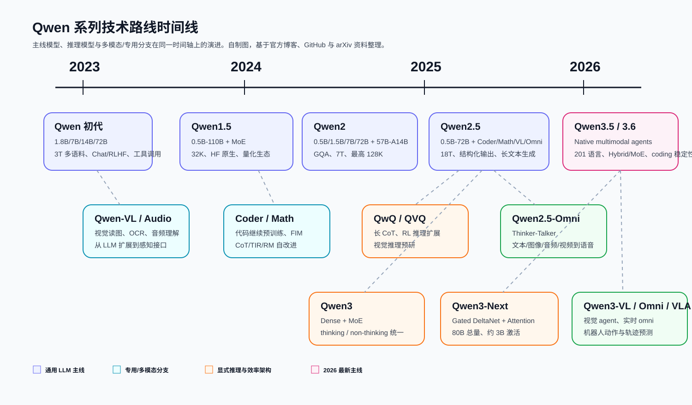
中英到多语，指令跟随、长文本、代码、数学逐步增强。
Dense Transformer 到 GQA、MoE、Hybrid Attention、Gated DeltaNet。
工具调用到 QwQ/QVQ，再到 Qwen3 hybrid thinking。
VL、Audio、Omni、Image、VLA 逐步统一到 agent foundation。
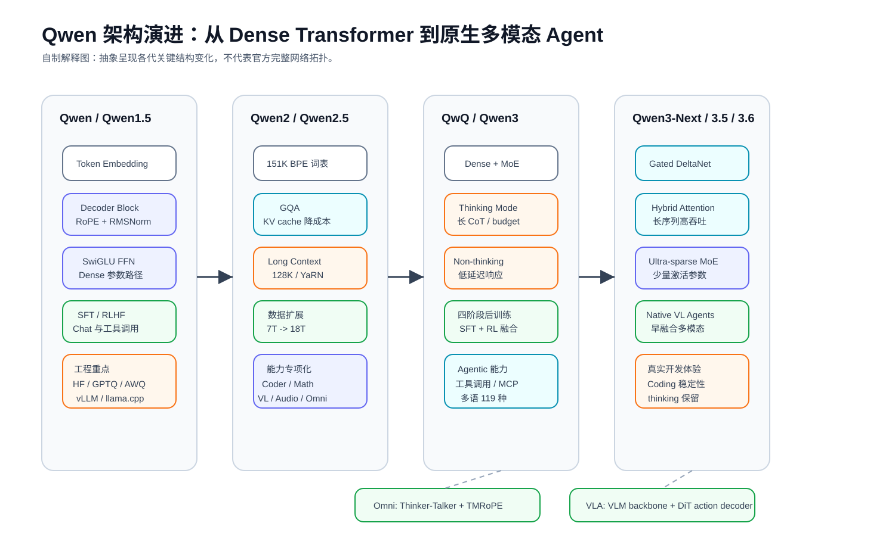
Qwen 初代：先把开放中英 LLM 做可用
重点不是“发明新层”，而是把 base、chat、量化、微调、部署、工具调用放进同一个开放生态。
中文/英文基础能力、开源工具使用、训练部署链路。
最多 3T token；1.8B/7B/14B/72B；SFT/RLHF；工具调用和代码解释器。
Int4/Int8、GPTQ、LoRA/Q-LoRA、vLLM/FastChat、WebUI/CLI。
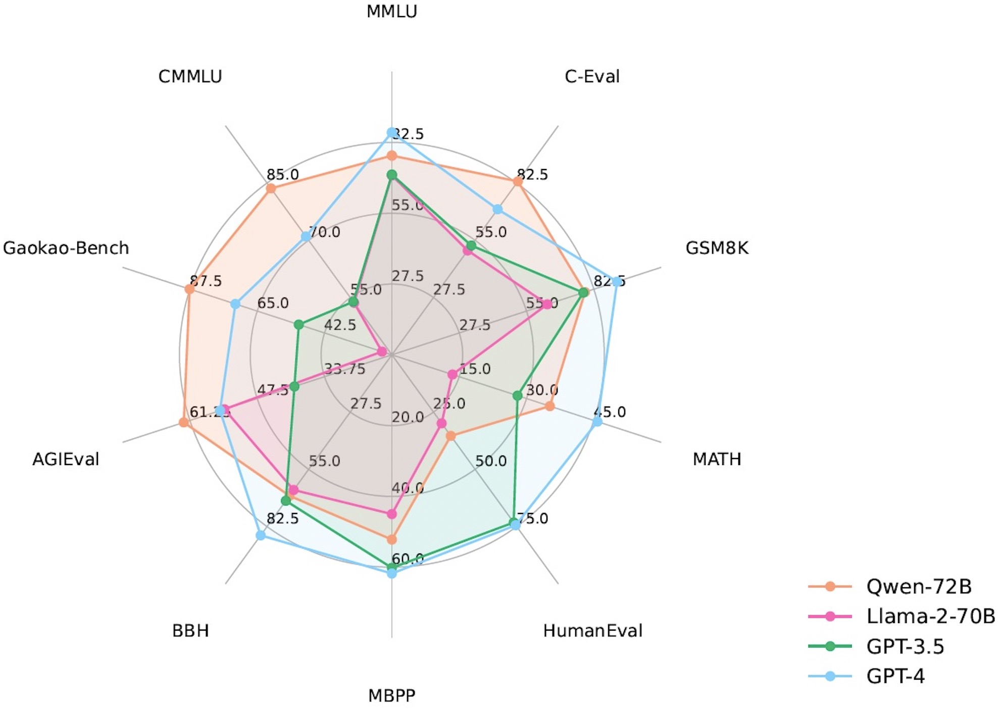
Qwen1.5：把“强模型”变成“稳定模型族”
0.5B 到 110B，覆盖端侧、本地开发、云端推理。
统一接口让长文本任务更容易迁移。
Qwen1.5-MoE-A2.7B 开始探索少激活参数路径。
这一代的意义是生态稳定：Transformers、AWQ/GPTQ/GGUF、vLLM/SGLang、llama.cpp、MLX 开始形成闭环。
基础知识、代码、数学、多语能力提升。
降低 KV cache 显存和推理带宽。
57B-A14B 在总参数和激活成本之间折中。
长文档、代码仓库、复杂对话进入主线。
Qwen2 的关键变化是：长上下文和效率不再是附加功能，而是基础模型设计目标。
Qwen2.5：18T 数据把通用能力推到成熟阶段
0.5B、1.5B、3B、7B、14B、32B、72B。
指令跟随、结构化输出、长文本生成、代码、数学。
Coder、Math、VL、Audio、Omni、1M 长上下文。
Qwen2.5 的分支后来反哺 Qwen3：VL 提取文档，Math/Coder 生成合成数据。
QwQ / QVQ：让模型“愿意花 token 思考”
QwQ 把数学、代码、逻辑的 long CoT 和 RL 推理推到前台；QVQ 则探索视觉输入下的多步推理。
long CoT 冷启动、规则奖励、可验证任务 RL。
需要更长输出、更高 max token、reasoning content 与 final answer 分离。
为 Qwen3 thinking mode、thinking budget、四阶段后训练铺路。
Qwen3：把深度推理和快速响应放回同一个框架
0.6B、1.7B、4B、8B、14B、32B。
30B-A3B 与 235B-A22B。
thinking / non-thinking，可用模板或指令控制。
从多语能力升级为全球化基础能力。
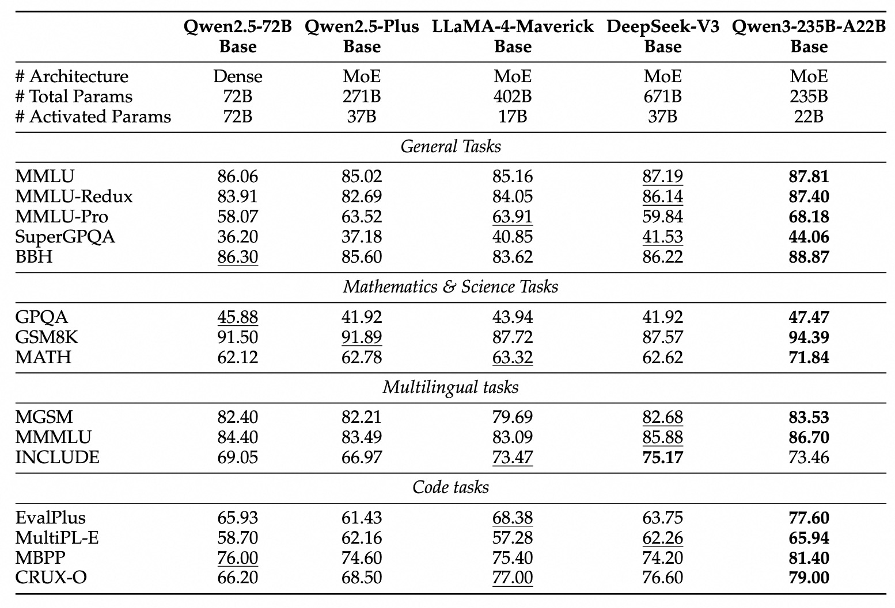
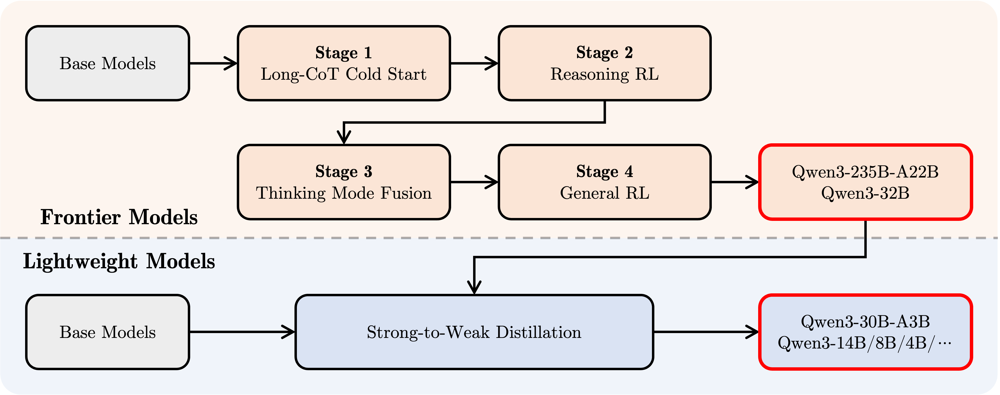
保留长程建模能力，降低长序列成本。
提高长上下文吞吐，为高效推理服务。
总参数大，激活参数约 3B，适合长上下文 agent。
Qwen3.5 / 3.6：从模型能力转向真实工作流
Qwen3.5 强调早融合多模态、201 语言、百万 agent 环境 RL；Qwen3.6 强调稳定性、agentic coding 和 thinking preservation。
多模态 token 早融合，不把视觉只当附加模块。
高吞吐、低延迟、少激活参数。
前端 workflow、仓库级 reasoning、Qwen Code、Qwen-Agent。
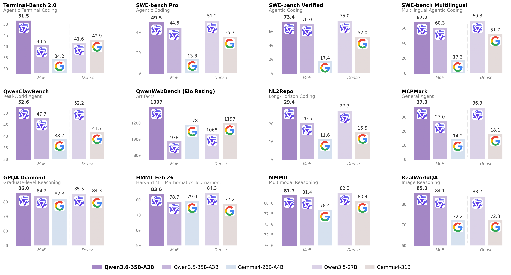
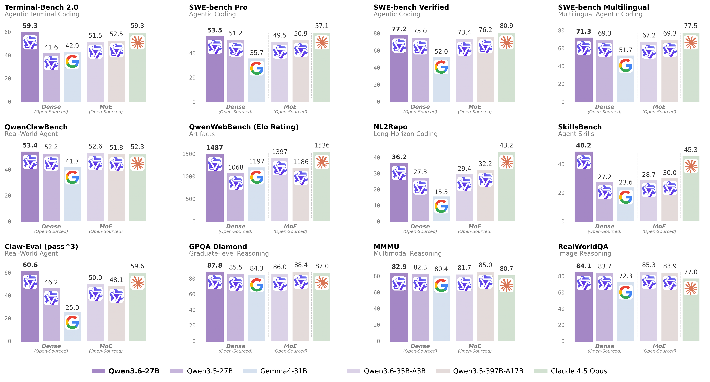
Qwen2.5-Coder 强调代码继续预训练、FIM、128K；Qwen3-Coder/Coder-Next 强调可执行任务合成、环境交互、RL、仓库级理解。
Qwen2.5-Math 支持中英 CoT 与 Tool-integrated Reasoning；Math-RM-72B 用于候选解排序。
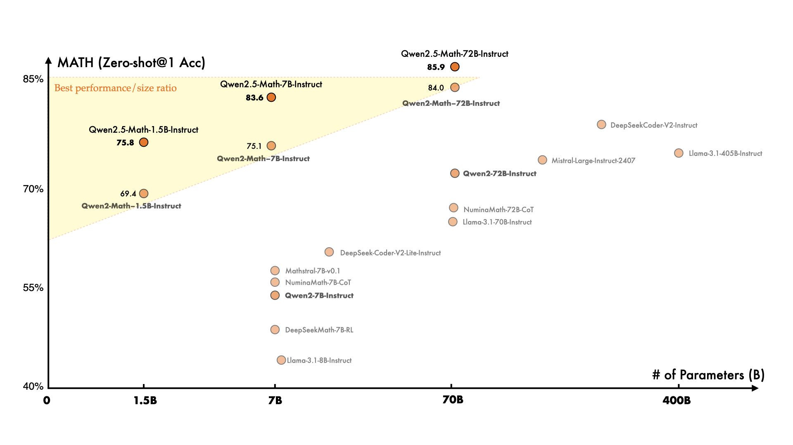
视觉 receptor、输入输出接口、OCR、grounding、多语 VQA。
动态分辨率、视频理解、文档解析和视觉定位。
Visual Agent、Visual Coding、2D/3D grounding、长视频和 Thinking 版本。
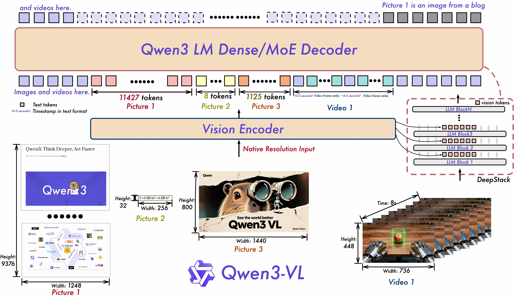
Omni 的目标：多模态输入，文本和自然语音流式输出
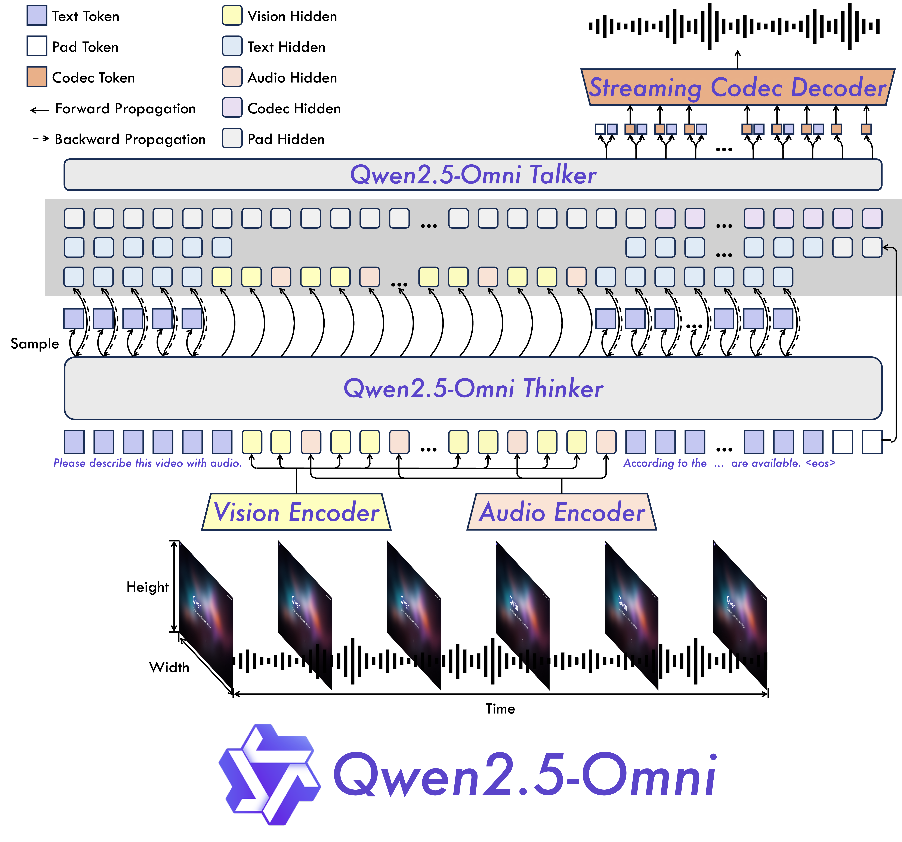
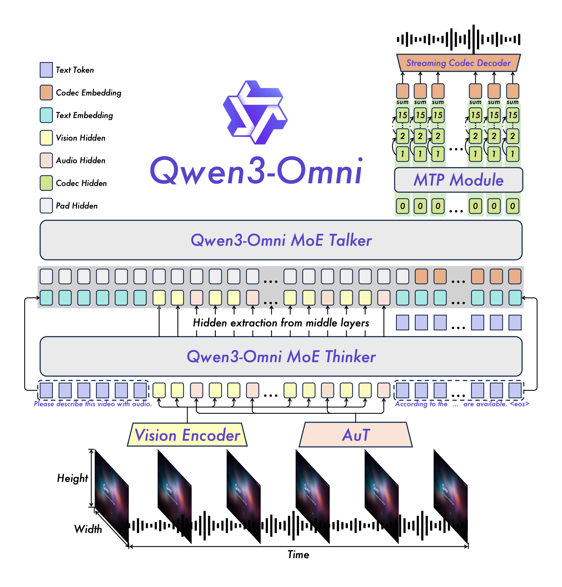
20B MMDiT，重点解决复杂文字渲染、中文文字、精确图像编辑。
Qwen3.5 VLM backbone + DiT action decoder，面向机器人动作。
Embedding/Reranker，MRL、指令感知、100+ 语言，进入 RAG 基础设施。
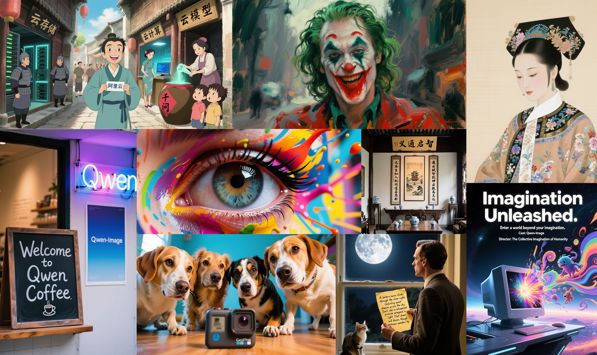
| 版本 | 核心问题 | 关键技术 |
|---|---|---|
| Qwen 初代 | 开放中英 LLM 可用性 | 3T、Chat 对齐、工具调用、量化/微调/部署 |
| Qwen1.5 | 多尺寸稳定开放 | 0.5B-110B、32K、HF 原生、首个 MoE |
| Qwen2 | 更长、更省、更强多语 | 7T、GQA、128K、57B-A14B MoE |
| Qwen2.5 | 通用能力成熟 | 18T、结构化输出、Coder/Math/VL/Omni |
| Qwen3 | 推理和快速响应统一 | Dense+MoE、thinking budget、四阶段后训练 |
| Qwen3.5/3.6 | 原生多模态 Agent | 早融合多模态、201 语言、agentic coding |
Qwen 的路线是：先把开放中英 LLM 做强，再把多尺寸和工程生态做稳，然后用专用分支补齐代码、数学、视觉、语音和图像能力，最后把推理、Agent 和多模态统一回主线模型。
Dense、MoE、Hybrid Attention、Gated DeltaNet、MMDiT/DiT 并行发展。
大规模预训练、合成数据、long CoT、RL、TIR、奖励模型、多模态早融合。
HF/ModelScope、vLLM/SGLang、MLX/llama.cpp、Qwen-Agent、Qwen Code、API/Studio。
主要资料来源
Qwen2 arXiv 2407.10671
Qwen2.5 arXiv 2412.15115
Qwen3 arXiv 2505.09388
Qwen2.5-Omni arXiv 2503.20215
Qwen3-VL arXiv 2511.21631
Qwen3-Omni arXiv 2509.17765
Qwen-Image arXiv 2508.02324
QwenLM GitHub 官方仓库
qwen.ai / qwenlm.github.io 官方博客
Hugging Face / ModelScope 模型卡
详见 docs/qwen_source_index.md